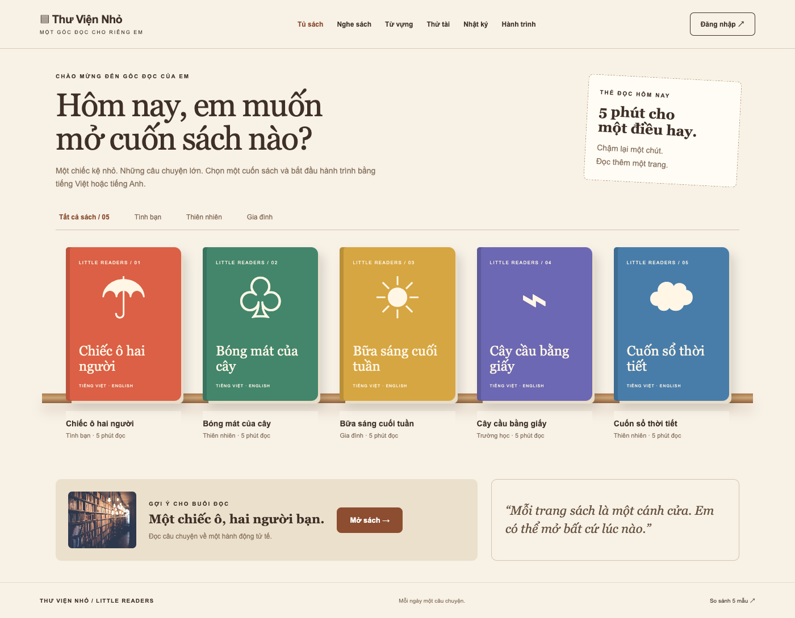
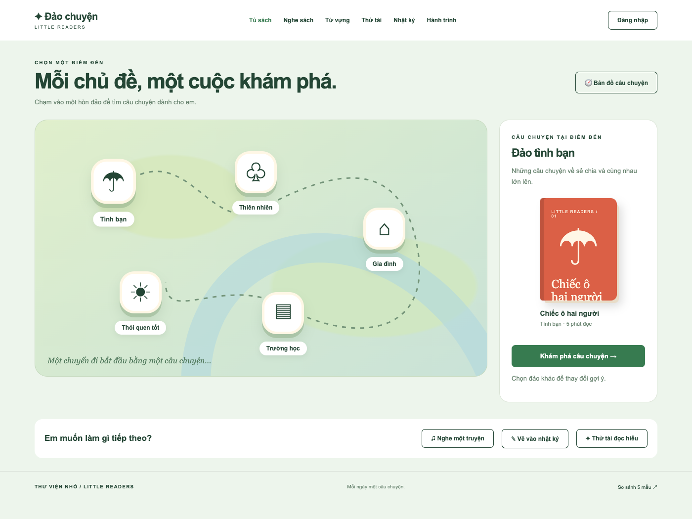
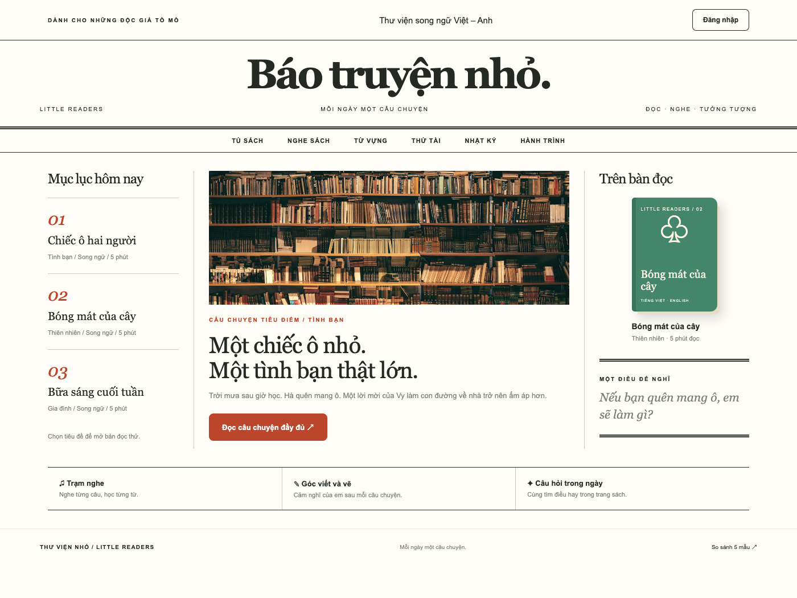
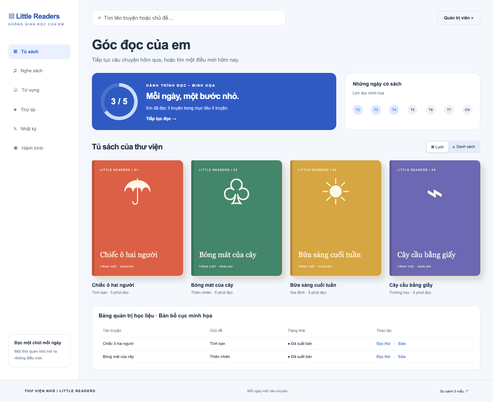
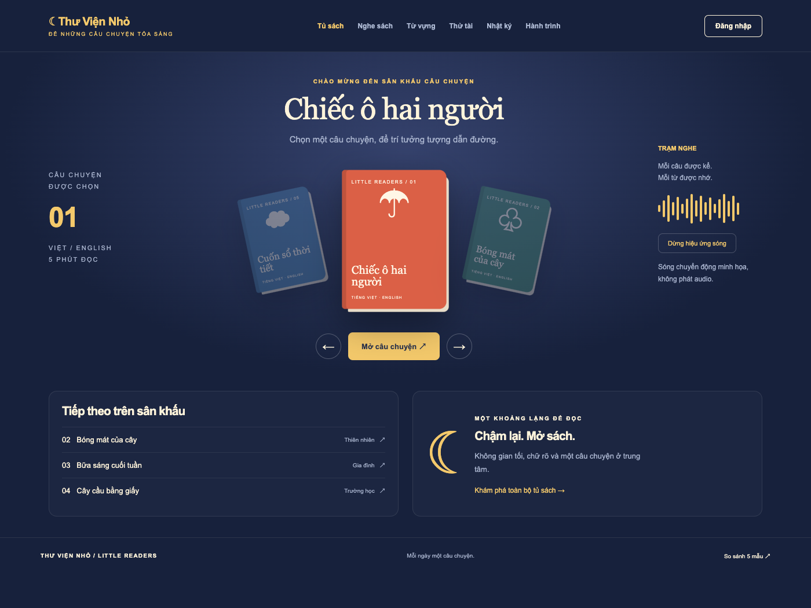

6. Kệ sách ấm áp
Kệ sách 3D, thẻ đọc, lọc chủ đề; bìa sách nhấc lên khi hover và mở hộp đọc thử.
Mở bản tương tác ↗Đây là bản thiết kế tương tác: mở từng mẫu để thử hover, đọc thử và các điều khiển riêng.
Số liệu, tiến độ và tài khoản trong bản mẫu chỉ để minh họa. Web hiện tại chưa thay đổi.

Kệ sách 3D, thẻ đọc, lọc chủ đề; bìa sách nhấc lên khi hover và mở hộp đọc thử.
Mở bản tương tác ↗
Bản đồ chủ đề, đường đi, bảng gợi ý bên phải; chọn đảo cập nhật truyện, nút đảo nổi khi hover.
Mở bản tương tác ↗
Masthead lớn, mục lục bên trái, bài tiêu điểm giữa, bàn đọc bên phải; tiêu đề mở hộp đọc thử.
Mở bản tương tác ↗
Sidebar cố định, thanh tìm kiếm, bảng tiến độ và lịch đọc; đổi lưới/danh sách và lọc truyện trực tiếp.
Mở bản tương tác ↗
Nền tối, bìa truyện ở trung tâm, carousel hai bên, playlist và trạm nghe; đổi truyện và sóng chuyển động.
Mở bản tương tác ↗Ảnh thư viện: Unsplash. Bìa chữ và hình khối được dựng bằng HTML/CSS. Không gọi API tạo ảnh.